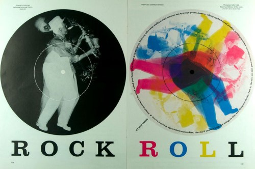

The Design of the 1960s
The nineteen-sixties were a vibrant time in the world of design in which increasing internationalism and experimentation flourished. This website pays tribute to some of the great designers and landmark design moments of that pivotal and unforgettable decade.
Significant Designers
- Paul Rand
- Muriel Cooper
- Ikko Tanaka
- The Eames
- Ray Eames
- Charles Eames
- Saul Bass
- Margaret Calvert
- Yusaku Kamekura
- Herb Lubalin
- Shigeo Fukuda
- Milton Glaser
- Massimo Vignelli
Top Typefaces of 1960s Style
- Avant Garde
- Cooper Black
- Futura
- Helvetica
- Univers
- Eurostile
- Impact
- Sabon
- Bauhaus
- Baby Teeth